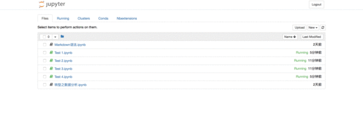

|
|
☰ 目录
关闭和退出关闭笔记本和终端当我们在Jupyter Notebook中创建了终端或笔记本时，将会弹出新的窗口来运行终端或笔记本。当我们使用完毕想要退出终端或笔记本时，仅仅关闭页面是无法结束程序运行的，因此我们需要通过以下步骤将其完全关闭。 ① 方法一⑴ 进入“Files”页面。 ⑵ 勾选想要关闭的“ipynb”笔记本。正在运行的笔记本其图标为绿色，且后边标有“Running”的字样；已经关闭的笔记本其图标为灰色。 ⑶ 点击上方的黄色的“Shutdown”按钮。 ⑷ 成功关闭笔记本。
② 方法二⑴ 进入“Running”页面。 ⑵ 第一栏是“Terminals”，即所有正在运行的终端均会在此显示；第二栏是“Notebooks”，即所有正在运行的“ipynb”笔记本均会在此显示。 ⑶ 点击想要关闭的终端或笔记本后黄色“Shutdown”按钮。 ⑷ 成功关闭终端或笔记本。
③ 注意⑴ 只有“ipynb”笔记本和终端需要通过上述方法才能使其结束运行。 ⑵ “txt”文档，即“New”下拉列表中的“Text File”，以及“Folder”只要关闭程序运行的页面即结束运行，无需通过上述步骤关闭。 ④ 演示 退出Jupyter Notebook程序如果你想退出Jupyter Notebook程序，仅仅通过关闭网页是无法退出的，因为当你打开Jupyter Notebook时，其实是启动了它的服务器。 你可以尝试关闭页面，并打开新的浏览器页面，把之前的地址输进地址栏，然后跳转页面，你会发现再次进入了刚才“关闭”的Jupyter Notebook页面。 如果你忘记了刚才关闭的页面地址，可以在启动Jupyter Notebook的终端中找到地址，复制并粘贴至新的浏览器页面的地址栏，会发现同样能够进入刚才关闭的页面。 因此，想要彻底退出Jupyter Notebook，需要关闭它的服务器。只需要在它启动的终端上按：
然后在终端上会提示：“Shutdown this notebook server (y/[n])?”输入 参考资料\1.知乎：jupyter notebook 可以做哪些事情？猴子的回答 \3. Anaconda官方下载页面 \4. Python·Jupyter Notebook各种使用方法记录 \5. Stack Overflow中有关如何隐藏/显示输入单元格的问题 \6. 魔术命令官方文档 |